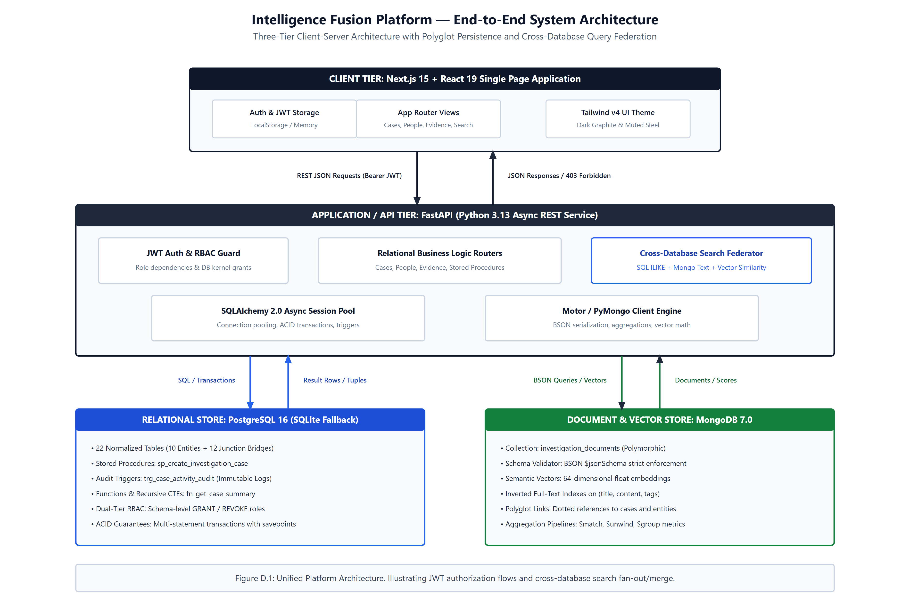

The Intelligence Fusion Platform is an end-to-end case management system built around a polyglot persistence architecture. The platform connects a Next.js 15 client single-page application (SPA), an asynchronous FastAPI 3.13 backend, a 22-table PostgreSQL relational database (with automated SQLite fallback), and a MongoDB 7.0 document store with a 64-dimensional semantic vector search engine.

Table 1 catalogs the platform's primary REST endpoints, detailing their HTTP method, route, access control requirements, storage tier, and operation.
| Method | API Route | Required Role | Storage Store | Operational Description |
|---|---|---|---|---|
POST |
/api/auth/login |
Public (Unrestricted) | PostgreSQL (officers) | Verifies bcrypt password; issues signed HS256 JWT. |
GET |
/api/cases |
Authenticated | PostgreSQL (cases) | Lists case dossiers with priority/status filtering. |
POST |
/api/cases |
Admin, Investigator |
PostgreSQL (SP) | Invokes sp_create_investigation_case + audit trigger. |
GET |
/api/cases/{id} |
Authenticated | PostgreSQL (Function) | Returns case summary via fn_get_case_summary. |
GET |
/api/evidence |
Authenticated | PostgreSQL (evidence) | Lists seized evidence items and current locations. |
POST |
/api/evidence/{id}/custody |
Admin, Evidence Officer |
PostgreSQL (Tx) | Multi-statement custody transfer with SHA-256 hash. |
GET |
/api/documents |
Authenticated | MongoDB (docs) | Retrieves polymorphic intelligence documents. |
GET |
/api/search |
Authenticated | Polyglot (SQL + Mongo) | Parallel fan-out across SQL ILIKE and Mongo text index. |
GET |
/api/search/semantic |
Authenticated | MongoDB + Vector | 64-dimensional dense semantic vector similarity query. |
GET |
/api/graph/relationships |
Authenticated | Polyglot Graph | Traverses 12 junction bridges for entity graph view. |
POST |
/api/officers |
ADMIN ONLY |
PostgreSQL (officers) | Provisions officer credentials (enforces 403 on others). |
The user interface is built using Next.js 15, React 19, and Tailwind CSS v4. In keeping with modern operational tool standards, we designed the interface with a dark graphite base palette (#070A0F, #0B0F17, #0E1420), muted steel blue accents, structured data tables, and an interactive entity relationship canvas powered by @xyflow/react.
To demonstrate mastery beyond baseline course expectations, we implemented five significant architectural extensions:
backend/app/core/vector.py) that converts queries into 64-dimensional float embeddings and computes cosine similarity against stored documents. This allows semantic intelligence discovery without relying on third-party cloud APIs.GRANT / REVOKE).asyncio.gather, merging relational records, polymorphic documents, and vector similarity ranks into a unified response payload.trg_case_activity_audit), ensuring an unalterable forensic record.Both team members contributed actively to the architecture, implementation, and verification of the project:
| Team Member | Primary Focus | Core Deliverables & Technical Responsibilities |
|---|---|---|
| Saatvik Gupta ( PES1UG24CS395) |
Relational Architecture & Backend Systems | Designed the 22-table relational schema; authored schema.sql, DDL/DML scripts, stored procedure sp_create_investigation_case, function fn_get_case_summary, and trigger trg_case_activity_audit; implemented FastAPI REST services, dual-tier RBAC, and the 64-dimensional vector search engine. |
| Satyam Goyal ( PES1UG24CS424) |
NoSQL Modeling & Frontend User Interface | Designed the MongoDB document model, BSON schema validator, and aggregation pipelines; authored Next.js 15 views, the Tailwind v4 graphite design system, the interactive @xyflow/react relationship graph, and client-side API state caching. |
Table 2 maps all 14 components of the official university evaluation rubric to the corresponding submission documents, verifying complete coverage across the platform.
| # | Official Rubric Component | Marks | Submission Deliverable | Repository Evidence Path |
|---|---|---|---|---|
| 1 | ER Diagram | 2 | 01_ER_Diagram.pdf (pp. 1–5) |
docs/diagrams/chen_*.png, crowsfoot_*.png |
| 2 | Relational Schema with Keys & Constraints | 3 | 02_Relational_Schema.pdf (pp. 1–3) |
database/sql/schema.sql, docs/database-design.md |
| 3 | SQL Database Implementation (DDL) | 4 | 03_SQL_DDL_Implementation.pdf (pp. 1–3) |
database/sql/schema.sql |
| 4 | NoSQL / Vector Database Creation | 4 | 04_NoSQL_Vector_Database_Creation.pdf (pp. 1–3) |
database/mongodb/collection-schema.json |
| 5 | Technology Justification | 1 | 05_Technology_Justification.pdf (pp. 1–2) |
docs/technology-justification.md |
| 6 | DML Operations & Transactions | 4 | 06_DML_Operations.pdf (pp. 1–3) |
database/sql/dml-examples.sql |
| 7 | Nested, Correlated, Recursive & JOIN Queries | 4 | 07_Queries_Nested_Correlated_Recursive_Joins.pdf |
database/sql/advanced-queries.sql |
| 8 | Advanced SQL (Procedure, Trigger, Function, CTE) | 6 | 08_Advanced_SQL_Procedure_Function_Trigger_CTE.pdf |
database/sql/advanced-concepts.sql |
| 9 | NoSQL / Vector Features & RUD Operations | 7 | 09_NoSQL_Vector_Features_and_RUD.pdf |
database/mongodb/rud-examples.js, vector.py |
| 10 | Next.js User Interface | 3 | 11_Project_Report.pdf (Section 3) |
frontend/src/views/* |
| 11 | Backend API & Database Integration | 2 | 11_Project_Report.pdf (Section 1–2) |
backend/app/routers/* |
| 12 | Authentication & Dual-Tier RBAC in Database | 4 | 10_Authentication_and_RBAC.pdf |
database/sql/roles-and-grants.sql, auth.py |
| 13 | Documentation & Git Quality | 2 | 11_Project_Report.pdf (Section 1–6) |
README.md, Clean Git History, start.ps1 |
| 14 | Originality, Contribution & Modifications | 4 | 11_Project_Report.pdf (Section 4–5) |
docs/modifications.md (5 major extensions) |
| Total | 14 Components (Official Evaluation Rubric) | 50 | Complete 11 PDF Deliverable Suite | 100% Repository Compliance Verified |